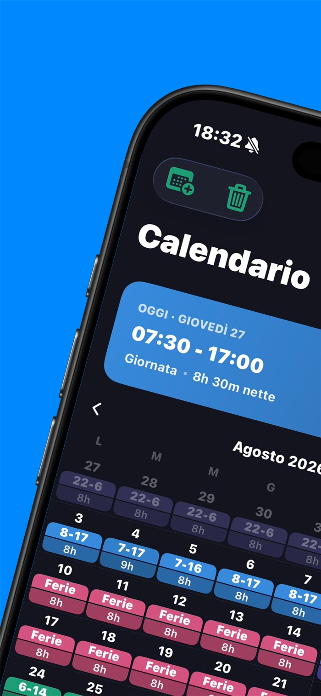
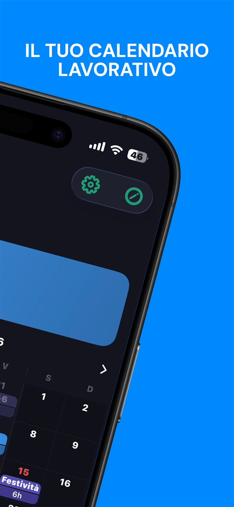
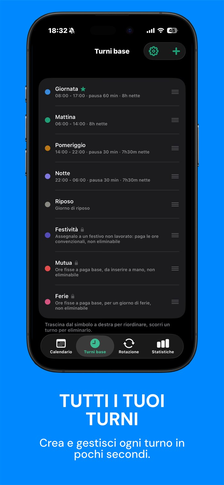
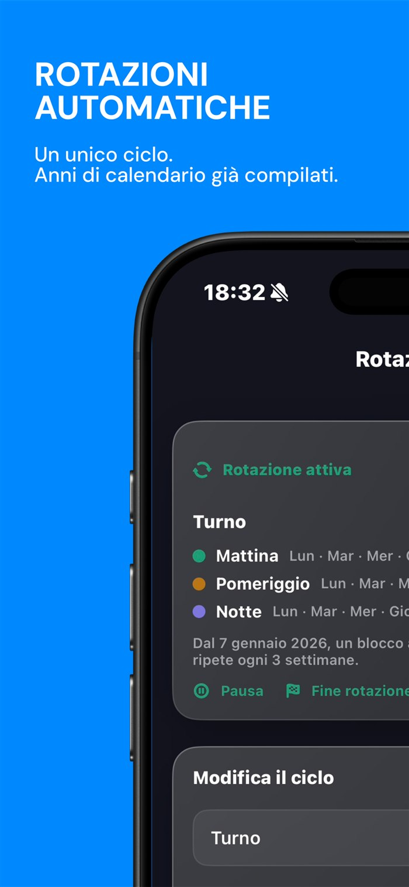
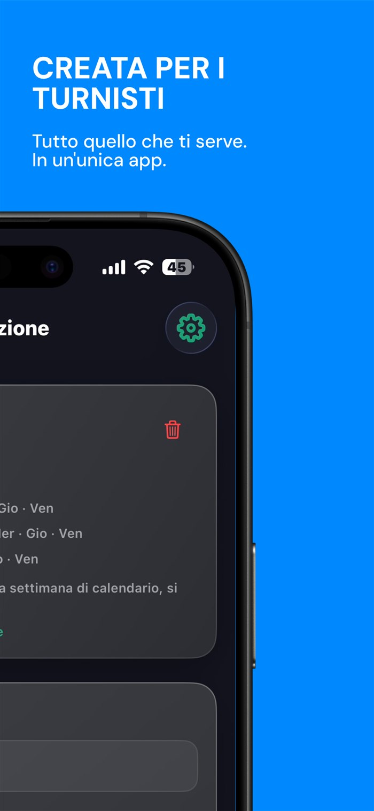
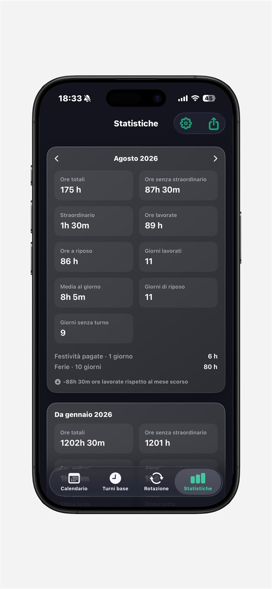
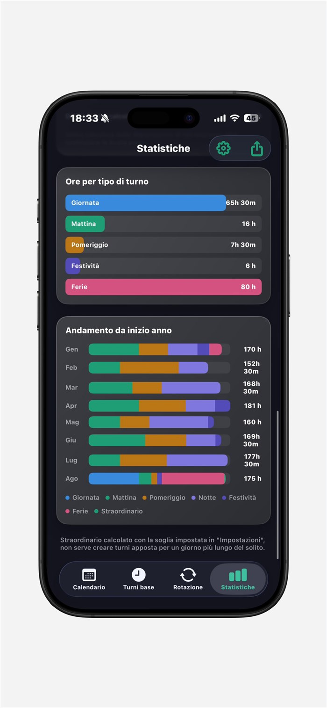
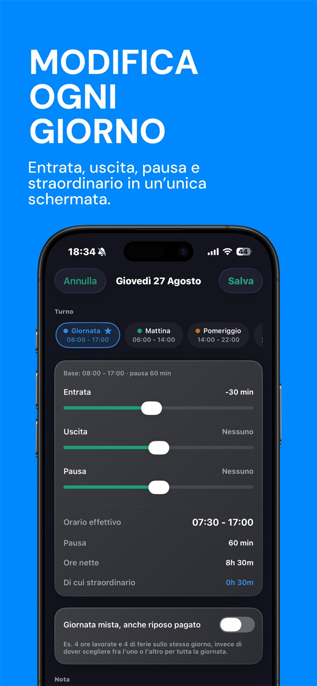
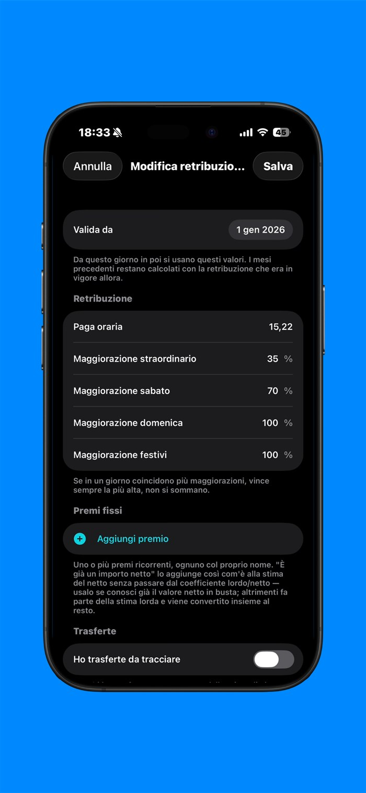
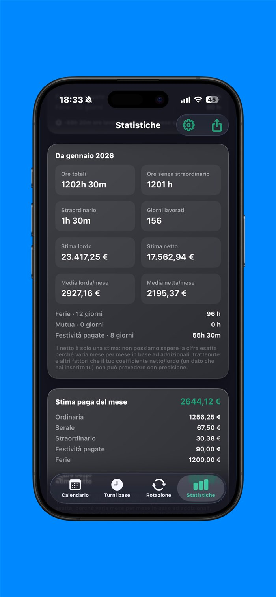

I tuoi turni di lavoro,
finalmente in ordine.
ShiftPro trasforma orari flessibili, rotazioni e straordinari in un calendario semplice — con ore, statistiche e stima della paga sempre aggiornate.










Pensata per turni che cambiano ogni giorno
Niente più liste infinite di turni per ogni piccola variazione. ShiftPro parte da pochi turni e li adatta al volo.
Un turno, mille varianti
Entri un'ora prima? Esci mezz'ora dopo? Sposti solo quel giorno con uno scostamento, senza creare un turno nuovo ogni volta. Basta con le centinaia di turni quasi identici.
Rotazioni che si ripetono da sole
Imposta il tuo ciclo una volta e ShiftPro riempie i mesi — e gli anni — in automatico. Un'eccezione vale solo per il giorno che scegli, senza riscrivere il resto.
Ore, straordinario e stima paga
Ore ordinarie, straordinario oltre la tua soglia, giorni lavorati e stima della paga lorda e netta — per il mese e da inizio anno. Con confronto sullo stesso periodo del mese scorso.
Esporta e condividi
Genera un report PDF del mese da salvare o stampare, oppure esporta i tuoi turni verso Calendario, Google Calendar o Outlook in un tocco.
I tuoi dati restano tuoi
Nessuna pubblicità, nessun tracciamento pubblicitario. Solo il tuo calendario di lavoro.
Sul tuo dispositivo
I turni sono salvati sul tuo iPhone. Con la sincronizzazione viaggiano protetti verso il tuo account, mai verso terzi.
Su tutti i dispositivi
Con il tuo account ritrovi i turni sincronizzati e sempre aggiornati, ovunque tu acceda.
Chiara o scura
Tema chiaro o scuro e icona dell'app abbinata: ShiftPro si adatta al tuo iPhone.
Nata da chi i turni li fa davvero
ShiftPro nasce dalla frustrazione di gestire orari che cambiano ogni giorno con app pensate per turni fissi. L'abbiamo costruita per chi lavora su turni — infermieri, operai, addetti alla vendita, autisti — perché tenere in ordine il proprio lavoro non dovrebbe essere un secondo lavoro.
Metti in ordine i tuoi turni
ShiftPro sta arrivando sull'App Store. Preparati a dire addio alle liste infinite di turni.
Presto disponibile suApp Store